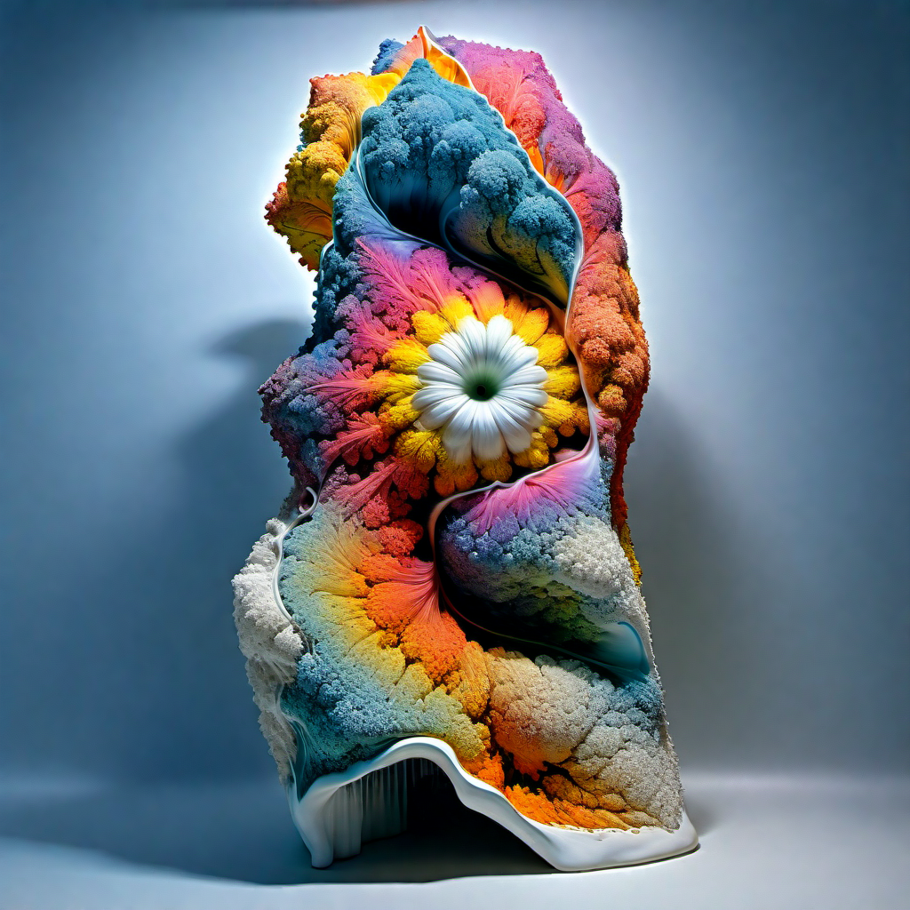
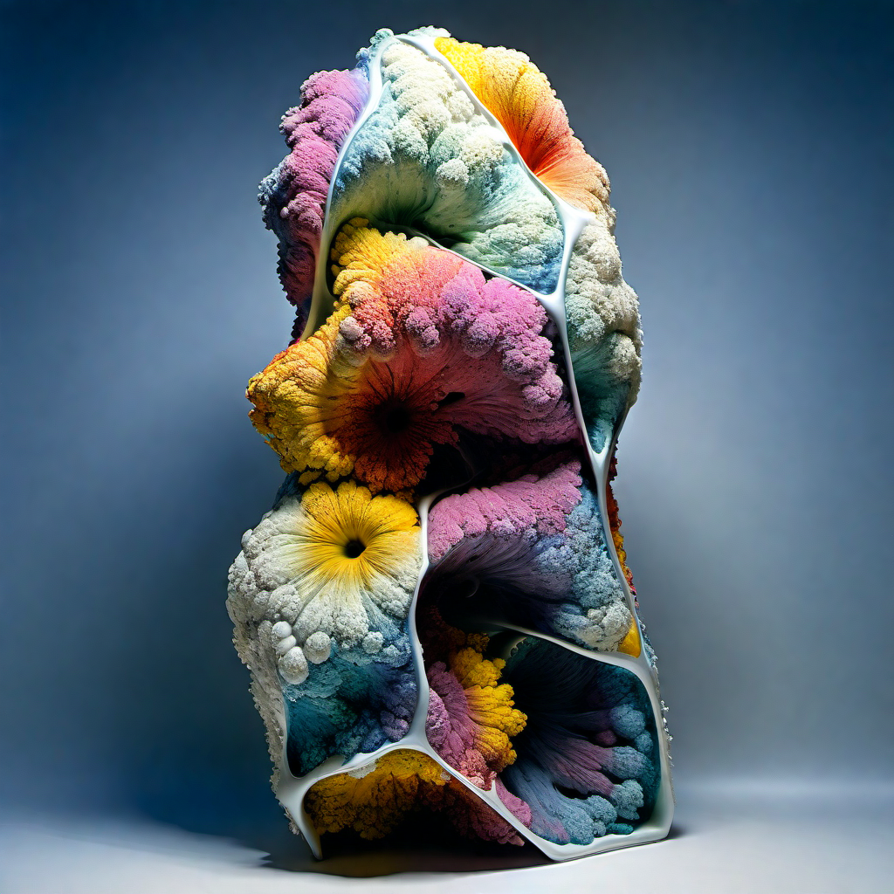

In this project, sawdust is used for printing architectural components, with forms derived from advanced AI generative models. Techniques such as IP Adapter, Text-to-3D modeling, and Gaussian models are employed to create intricate and innovative designs. These AI-driven approaches enable the generation of unique forms, enhancing the overall design and functionality of the architectural elements.
Temporal Architecture
Paresh Patel
This project explores Temporal Architecture by combining ceramics and biodegradable sawdust to create dynamic, evolving architecture. Here I took columns as an example. Using advanced generative design scripts and robotic printing, the ceramic panels are filled with sawdust, which degrades over time, allowing for periodic redesign and renewal. This approach emphasizes sustainability and innovative fabrication techniques in modern architectural design.
Temporal Architecture
Paresh Patel
This project explores Temporal Architecture by combining ceramics and biodegradable sawdust to create dynamic, evolving architecture. Here I took columns as an example, using advanced generative design scripts and robotic printing. The resulting panels are filled with sawdust, which degrades over time, allowing for periodic redesign and renewal. This approach emphasizes sustainability and innovative fabrication techniques in modern architectural design.



